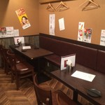

東中野周辺のおすすめのお店
東中野には意外と知られていないお店がたくさんある。
たくさんある中から特に
おすすめの絶品グルメが食べられる
お店を紹介！
和風ダイニング SAGA

- 東中野の”第二の我が家”で旨くて手頃な料理を堪能し、『ちょっとだけ幸せ』な気分に
東中野でひときわ異彩を放つOnly Oneの居酒屋。 SAGAといえばおすすめ料理のバリエーション！日々変わるおすすめメニュー。 - 店主自ら足を使って仕入れる厳選食材は“一期一会”を大切に、
その日1番のモノを使用し、食材の美味しさを引き出すレシピで提供！
毎日変わるメニューにリピーターが続出！
軽くつまめる前菜は≪280円～≫、炭火焼や、〆にピッタリな釜飯など、
ボリューム満点メニューが目白押し!

場所確認(地図)はこちらから
★ジャンル：居酒屋、バー
★営業時間：全日
ランチ:12:00〜14:00 LO14:00
月~金・土・祝前ディナー:17:00〜01:00 LO01:00
日・祝
ディナー:17:00〜24:00 LO24:00
★予算：ランチ ～1000円 ディナー ～2000円
★定休日：不定休 お店に確認してください
★電話：050-5303-8025
究極のにぼし味噌らーめん 人間ばんざい
- 煮干し味噌が新たな革命を起こす！！
煮干し味噌の究極を追及したらーめん！！ - 煮干しと味噌というなかなか巡り会えない組み合わせを追及したラーメン屋。
- こだわりぬいた1品ではありますが、個人差で
「煮干しがちょっと濃い・薄い」と思ったお客さんには
味を調整するカスタマイズが可能ですのでお気軽にお声かけください。
場所確認(地図)はこちらから
★ジャンル：ラーメン
★営業時間：平日：11:30〜14:30
18:00〜22:00
日・祝：11:30~22
★予算：ランチ ～1000円 ディナー ～1000円
★定休日：火曜日
★電話：050-5303-1634
大盛軒
- わざわざ食べに行く価値のある、東中野の名物B級
グルメ店東中野の名物B級グルメ店。
名物は熱々の鉄板で焼き上げられた鉄板麺
(鉄板焼き、半ラーメン、ライス、生卵、
ニンニクチップ、お新香)のセット。 - ジュージューと店内に響き渡る音とともに運ばれてきた瞬間、
そのボリュームに度肝を抜かれる。
まさに大盛軒と感じさせてくれる名物料理である。
場所確認(地図)はこちらから
★ジャンル：中華料理
定食
鉄板焼き
ラーメン
丼もの
焼きそば
★営業時間：全日 11:00~22:00
★予算：ランチ ～1000円 ディナー ～1000円
★定休日：年中無休
★電話：
03-3371-5743
ito

- 名物ボンボーヌはソース、肉汁、チーズが
渾然一体となり、濃厚で美味。
東中野駅から徒歩1分、温もりのある木のドアとえんじ色の屋根が目印の「ito(イト)」。 - 1969年に開店以来、
40年以上の歴史を持つ老舗洋食屋さんのこだわりは
何と言ってもソースにある。
店一番の人気メニュー、特製デミグラスソースで味わう
新触感のハンバーグ「ボンボーヌ」はメディアでも
多く取り上げられている垂涎の一皿
場所確認(地図)はこちらから
★ジャンル：洋食 ハンバーグ
★営業時間：月~金
11:30〜14:30
月~水・金・土・日・祝
18:00〜22:00
★予算：ランチ ～1000円 ディナー ～2000円
★定休日：年中無休
★電話：03-3371-5746
ソナム 東中野店
- スンドゥブチゲランチが人気の、
有名韓国料理店
恵比寿で有名な韓国料理のお店
「ソナム 東中野店」。
人気店でお昼時の12:00などは満席で
座れないことも。 - ランチは700円〜1000円程。
人気のスンドゥブチゲランチは銀の器に
山盛りご飯はおかわり自由。
スンドゥブは、玉ねぎやネギに、まん丸豆腐、卵。
辛さは、真っ赤ですが、色よりはマイルドで食べやすい。
場所確認(地図)はこちらから
★ジャンル：
韓国料理
焼肉
サムギョプサル
丼もの
★営業時間：全日11:30〜14:30
17:00〜24:00 LO23:20
★予算：ランチ ～1000円 ディナー ～5000円
★定休日：無休
★電話：03-3371-7956